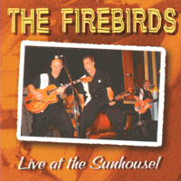

the Firebirds - Live At The Sunhouse! (Album, 2003)
01 - King Of Love (2:45)
02 - She's The Most (2:28)
03 - Driving Wheel (3:22)
04 - Such A Long Way (2:12)
05 - 59 Ford (2:50)
06 - Two Timin' Lover (2:58)
07 - Broken Heart (2:47)
08 - Sho Bop (3:15)
09 - Swan Lake (2:29)
10 - Mais Ous (2:27)
11 - Jeannie, Jeannie, Jeannie (2:32)
12 - Rock This Town (2:50)
13 - This Is The Night (2:12)
14 - Long Tall Girl (3:17)
15 - Rockabilly Man (2:56)
© Rarity Records :: [CD 192727]
Notes
United Kingdom, England, Bristol.
My experience is based on Digital release of this album (2010) [© 2009 Sam Sam Music]
reference information: Discogs®
Review
098/366 (Project 366)
Live album of a rather legendary band. Fantastic!
Starting with classic Pop, Jive, fifties, sixties and general vintage mood, normal Doo Wop, they performing lovely Rock'n'Roll then and stream out right to what they, perhaps, proud to be and do - Rockabilly! Great tunes, fine sound, nice atmosphere and joyful excitement. Rock and Roll, Vocal Pop, Rockabilly, love songs and even instrumental composition - all is very harmonised. Really rockin' and rollin' show.
Let's go with the first song "King Of Love"! Oh, so groovy and tender. Very bright and fervent mild tune, slightly boogie with rockin' and rollin' beat. After the song - a little chat with the crowd. Jive on! "She's The Most" is a good continuation. Amazing voice and backing vocals. So harmonious. Melodious, chanting, friendly, positive, even sunny. Of course, because it is a very loving mood. The very the Firebirds! All their best and originality. They are lively at live even more. Rockin' and Rollin' doowopper roockabilly candies. However, they other side of a rocking suit is no less astonishing. Just listen to their cover version of "Driving Wheel". With singing together, power and live here. Sounds right. The next track "Such A Long Way" is a best view of UK Jive Rock'n'Roll. Sweet, dreamy, straight and curious. Twistin' a bit. And "59 Ford" brings back glorious Rock'n'Roll. Old good way. Very atmospheric, very agile. Then "Two Timin' Lover" with a little Rockabilly tone and boppin' tenderness. There are good feelings of the so fifties and sixties. Nevertheless, a catchy hit tune with the title "Broken Heart" is next. Their one of the most popular, perhaps. A very awakening sound, despite the lyrics or maybe instead straight to the point. Wavy and tidal sound of sensations. For comparison - the next song "Sho Bop" is much more strictly sentimental and dreamy. Great tune, actually. So, time for surprises - the greatest instrumental based on the famous classical composition "Swan Lake". The Firebirds performed recognizably, but so powerful and interesting - that you can just applaud. Such a Rockabilly intstrumental with elements of Surf. And we have already reached the tenth track of this album, where vintage mood of General Pop is back. Song "Mais Ous" - still rockin' and rollin', jivin' and still with nostalgia. And this is the second smooth switch to the next song. This time to lovely tune "Jeannie, Jeannie, Jeannie", where Rockabilly mood returns with stylish Rock'n'Roll. For me it is more interesting with a slightly raw and furious performance style of Eddie Cochran. But the Firebirds with chicly sound too. Then small chatting with the crowd before next track "Rock This Town". Wonder cover version of this song. Sounds very lively. But more perky point is a switch to so tender "This Is The Night" song. Perhaps, this sound is one of catchy points that is so attractive with the Firebirds. "Long Tall Girl" is another spice of their original sound with so candy and delicate Rockabilly Rock'n'Roll. Fancy and wonderful. Before 'one more' song - talking with crowd, introducing band members to the crowd and their applause. Great! And real Rockabilly energy with "Rockabilly Man" stikes back. Amazing, awesome, cool! Great end of the live show.
The sound, of course, is surprising. It seems that there is a feeling that there will now (every second) be lightning-fast power - but everything happens so easily, positively and cheerfully - which is even surprising. Getting into that.
In general, not only the atmosphere of a live concert is felt, but also the style of the Firebirds and their capabilities are well conveyed. Moreover, the recordings sound good. It is pleasantly and gladly. Particularly interesting elements are exclusively technically beautiful. Whether it's a solo guitar or mild singing with backing vocals.